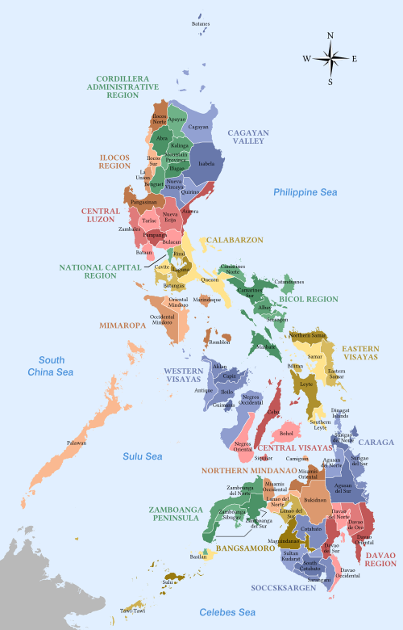

PHILIPPINES
The Philippines
Also known as "Pearl of the Orient Seas", is one of the well known country in the Southeast Asia located in the western Pacific Ocean. It's a country consisting of 7,600+ islands. Philippines is generally divided into three main island groups which is the Luzon Islands, Visayas Islands, and the Mindanao Islands. In addition, It is also visited by millions of tourist every year due to it's numerous scenic views, historical sites, and its hundreds of beaches and waterfalls located all over the country.
This website is created for the purpose of helping tourist get to know a little about the Philippines and the following places they could visit through a Photo Tour. In fact, some of the places that tourist can visit in the Philippines are listed below:
- In the Northern Luzon, Banaue Rice Terraces & Magat Dam
- In National Capital Region, Intramuros & Palawan island
- In Southern Luzon, Mayon Volcano & CamSur Water Sports Complex
- In Visayas Islands, San Juanico Bridge & Magellan's Cross
- In Mindanao Island, Tinago Falls & Tinuy an Falls